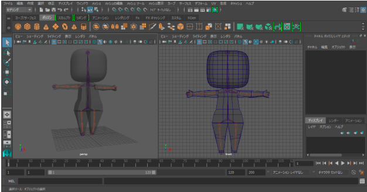

- Model basic character
- Add skeleton and rigging
- Modeled basic character
- Added skeleton but no rigging
- I had a skeleton bound to the model, but there were some errors with it not being bound correctly, and at the time I did not implement limits to how the limbs should move. Thus, I remade the skeleton and have yet to rig it. I also have a midterm due for my senior project that requires a lot of time-consuming work. Once I finish I will get right back into rigging the model!
- Finish skeleton rigging
- Polish character model and start on animation or start modeling hats,
depending on the needs of the team
- Determined to finish my midterm and catch up ASAP!
